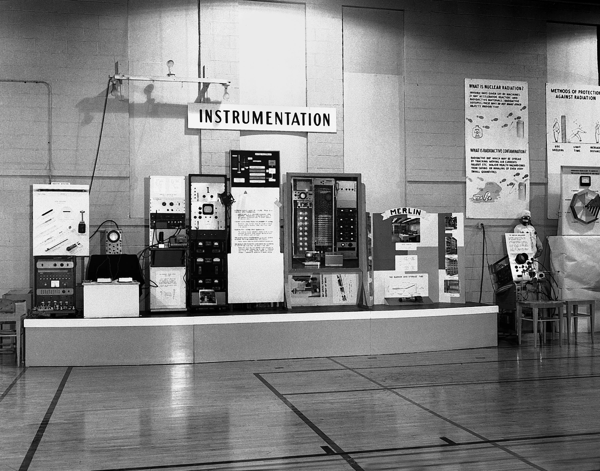

- Designer: William Higinbotham
- Platform: Analog computer
- Release NA: October 18, 1958
- Genre: Sports
- Mode: Multiplayer
William Higinbotham designed the game within a few hours, after which he and technician Robert V. Dvorak built it over a period of three
weeks. The game was displayed on an oscilloscope and played with two custom aluminum controllers. Its visuals show a representation of a tennis court viewed from
the side, and players adjust the angle of their shots with a knob on their controller and try to hit the ball over the net by pressing a button.
The game was very popular during the three-day exhibition, with players lining up to see the game, especially high school students. It was
shown again the following year with a larger oscilloscope screen and a more complicated design that could simulate different gravity levels. It was then
dismantled and largely forgotten until the late 1970s when Higinbotham testified in court about the game during lawsuits between Magnavox and Ralph H. Baer over
video game patents. Since then, it has been celebrated as one of the earliest video games, and Brookhaven has made recreations of the original device.
Development
In 1958, American physicist William Higinbotham worked in the Brookhaven National Laboratory in Upton, New York, as the head of the instrumentation
division. Higinbotham had a bachelor's degree in physics from Williams College, and had previously worked as a technician in the physics department at
Cornell University while unsuccessfully pursuing a Ph.D. there. He served as the head of the electronics division of the Manhattan Project from 1943 to
1945, and began working at Brookhaven in 1947, which focused on researching peaceful uses of atomic power. Once a year, the government research facility
held an exhibition for the public, with one day each for high school students, college students, and the general public. The exhibition largely consisted
of tours and static displays, with some attempts at making displays with "action", so for the 1958 exhibition Higinbotham decided to make an interactive
display to entertain the visitors. While reading the instruction manual for one of Brookhaven's computers, a Donner Model 30 analog computer,
he learned that the computer could calculate ballistic missile trajectories or a bouncing ball with wind resistance, and he decided to use this ability to
form the foundation of a game. He later recalled his intentions were that "it might liven up the place to have a game that people could play, and
which could convey the message that our scientific endeavors have relevance for society.
Higinbotham designed a game that used an oscilloscope to display the path of a simulated ball on a tennis court viewed from the side. The attached computer
calculated the path of the ball and reversed its path when it hit the ground. The game also simulated the ball hitting the net if it did not achieve a high
enough arc as well as changes in velocity due to drag from air resistance. Two aluminum controllers were attached to the computer, each consisting of a
button and a knob. Pressing the button hit the ball, and turning a knob controlled the angle of the shot. Originally, Higinbotham considered having a
second knob to control the velocity of the shot, but decided it would make the controller too complicated. The device was designed in a few hours and
was assembled over three weeks with the help of technician Robert V. Dvorak. While most of the circuitry was based on vacuum tubes and relays, the circuits
to display the graphics on the oscilloscope used transistors, then beginning to replace vacuum tubes in the electronics industry. Excluding the oscilloscope
and controller, the game's circuitry approximately took up the space of a microwave oven.
Legacy
After being dismantled, Tennis for Two was largely forgotten. It remained virtually unknown until the late 1970s and early 1980s when Higinbotham was
called on to testify in court cases for defendants sued by Magnavox over the video game patents of Ralph H. Baer. Having discovered the game, the
lawyers for the defense unsuccessfully attempted to have the game declared prior art to invalidate Baer's patents on television video games, resulting
in attention being given to the nearly 20-year-old game as possibly the first video game. It received further attention as the subject of articles in
Creative Computing and Video Replay in 1982 and 1983 highlighting its possible status as the first video game; the editor of Creative Computing, David
H. Ahl, had played Tennis for Two at Brookhaven in 1958, and dubbed Higinbotham the "Grandfather of Video Games". Higinbotham himself felt that the
game was an obvious extension of the Donner Model 30's bouncing ball program and therefore not worthy of patenting or a large part of his legacy; he
preferred to be remembered for his post-World War II nuclear non-proliferation work.
In 1997, a team at Brookhaven recreated the game for Brookhaven's 50th anniversary. The reconstruction took about three months, partially because the
parts were not readily available. This recreation was also displayed at the 2008 celebration of the 50th Anniversary of the original game. The replica
implemented an analog computer using solid-state operational amplifier devices instead of vacuum tubes as the original Donner Model 30 did. In 2010,
it was replaced with a restored Donner Model 3400 analog computer.
Gallery